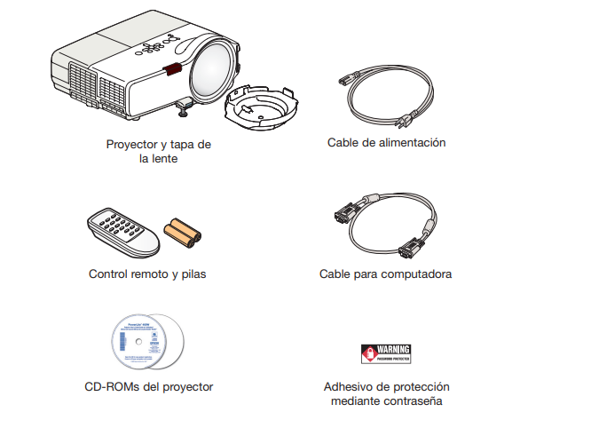
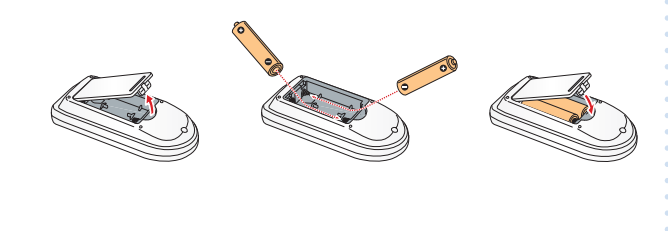
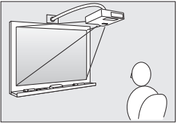
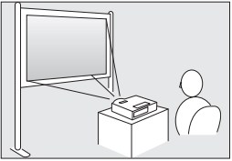

|
Por favor lea esta guía antes de utilizar el producto 1 Desembale el proyectorConfirme que tiene los siguientes productosRetire la almohadilla de la tapa de la lente y guárdela para cuando necesite transportar el proyector.
|
2 Prepare el control remoto1 Retire la tapa del compartimento de las pilas.2 Coloque las pilas en el compartimiento.3 Vuelva a colocar la tapa del compartimiento de las pilas. |
3 Seleccione una ubicación Puede instalar el proyector de diferentes maneras. La lente de proyección a corta distancia del proyector le deja suficiente espacio para su audiencia y le permite realizar su presentación cómodamente en frente de ellos sin proyectar una sombra en la pantalla.Para instalar el proyector en un salón de clases o en otro entorno, puede montar el proyector en una pared o arriba de una pizarra blanca compatible utilizando el sistema de montaje en pared opcional. Cuando utiliza una pizarra interactiva, puede controlar la presentación de su computadora tocando la imagen proyectada en la superficie de la pizarra. Si necesita transportar el proyector de un lugar a otro, puede colocarlo sobre una mesa en frente de la pantalla. |
 No toque la lente directamente con las manos para evitar dañar la superficie del lente.
No toque la lente directamente con las manos para evitar dañar la superficie del lente.